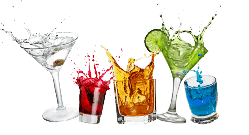

6 drinks especiais para as mulheres
Batida sonho de valsa
- 3 Bombom (Sonho de valsa).
- 1 lata de Leite condensador.
- 300 ml de Cachaça.
- 1 lata de Guaraná (A marca de efrigerante de sua preferência).
ingredientes
- Bata tudo no liquidificador, deixando os chocolates por ultimo pra ficar a parte crocante por cima.
- Sirva gelado.
modo de preparo
Batida do olympo
- 1/2 litro de Contini.
- 1/2 litro de Iogurte de morango.
- 1 lata de Leite condensado.
- 1 kg de Chocolate (Para a cobertura).
- 5 Morango (grandes).
ingredientes
- Bata o Iogurte e os morangos com o leite condensado.
- Derreta o Chocolate no microondas e adcione a mistura.
- Adicione também o Contini e bata tudo. Se necessário adicione Leite a mistura e sirva.
modo de preparo
Piña colada
- 1/2 dose de Rum.
- 1 xícara de Abacaxi.
- 1/2 dose de Leite de Coco.
- Gelo (4 pedras moídas).
- Açúcar (A gosto).
ingredientes
- Bater (ou mexer) os ingredientes e servir em copo de long drink.
- Decorar com meia fatia de abacaxi.
modo de preparo
Alegria total
- 400 ml de Licor de aniz.
- 200 ml de Vodka (ou Rum).
- 1 lata de Leite condensado.
- 6 Morango.
- 1 fatia de Abacaxi.
- Gelo.
ingredientes
- Bata todos os ingredientes no liquidificador e sirva.
modo de preparo
Sensação
- 1/2 Kapo (de morango).
- 3 Morango.
- 2 dose de Vodka.
- 1 dose de Licor de cacau.
- Gelo (Encha um copo de long drink com gelo quebrado).
ingredientes
- Amasse os morangos e junte com as duas doses de Vodka.
- Sirva em cima de MEIO copo de gelo quebrado.
- Complete o copo com gelo.
- Complete o copo com o Kapo.
- Despeje LENTAMENTE o licor de Cacau.
modo de preparo
Drink dos deuses
- 00 ml de Leite de Coco.
- 100 ml de Suco de Maracujá.
- 100 ml de Groselha.
- 1 lata de Leite condensado.
- 100 ml de Cachaça.
- Gelo (picado).
ingredientes
- Bater os 5 primeiros ingredientes no liquidificador.
- Acrescentar o gelo na hora de servir.
modo de preparo
10 drinks feitos com vodka
Abridor de pernas
- 1 dose de Vodka.
- 1 colher de sopa de Açúcar.
- 1/2 Limão (Cortado em 4 pedaços).
- 2 colher de sopa de Leite condensado.
- Gelo.
Ingredientes
- Coloque em uma coqueteleira: vodka, açúcar, leite condensado, meio limão cortado em 4 cubos, 4 a 5 pedras de gelo e bata até a coqueteleira ficar gelada(suada).
- Filtre para um copo com gelo.
- Decore com 2 fatias de limão.
Como Fazer
Kriptonita
- Vodka.
- Licor de Menta.
- Gelo.
Ingredientes
- Colocar Gelo até 60% do copo.
- Pôr Vodka até cobrir o gelo.
- completar lentamente com o Licor.
- Não Bater nem Mexer.
Como Fazer
Ice caseira
- 1 garrafa de Vodka.
- 1 garrafa de Soda Limonada zero (Tem que ser zero).
- 2 sachê de Refresco em pó (Limão, daqueles que já vem adoçados).
Ingredientes
- Pra cada copo de refrigerante retirado da garrafa, substitua por um copo de Vodka (Calma, não fica forte. Eu já fiz com 3 copos de Vodka e ficou 110%).
- Abra a garrafa de Refrigerante de limão ZERO e retire 2 copos de refrigerante (pode jogar fora, pode beber, dar pro cachorro, o que você quiser fazer).
- Agora encha um copo de vodka e coloque o conteúdo de 1 sachê dentro dele e mexa bem até dissolver tudo e jogue dentro da garrafa.
- Repita o mesmo com o outro sachê e depois pra limpar o copo do açucar que fica no fundinho, coloque mais vodka e vá jogando dentro da garrafa.
Como Fazer
lagoa azul
- 1 dose de Suco de limão.
- 1/2 dose de Vodka.
- 1/4 dose de Curaçao Blue.
- 1 lata de Soda Limonada.
- Gelo.
Ingredientes
- Bata em uma coqueteleira o suco de limão, a vodka e o Curaçao Blue.
- Ponha tudo em um copo de long drink (Highball ou Hurricane Glass).
- Adicione o gelo e complete o copo com a soda.
Como Fazer
Apple martini
- 40 ml de Vodka.
- 15 ml de Licor de Maça (Use suco de maça, se não encontrar.).
- 15 ml de Cointreau.
Ingredientes
- Misture tudo em um copo com gelo e sirva em uma taça de Martini.